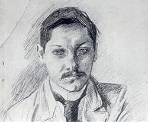
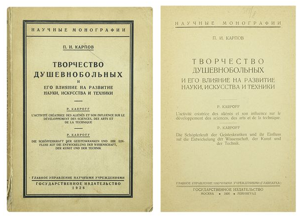

В 1926 году была выпущена книга российского психиатора, доктора медицинских наук Павла Ивановича Карпова "Творчество душевнобольных и его влияние на развитие науки, искусства и техники". Эта книга в настоящий момент считается самым крупным аналитическим трудом, заложившим основы изучения природы творчества человека через наблюдаемые отклонения.

Российская психиатрия конца 19 - начала 20 века выростила довольно много известных ученых-исследователей. Научные изыскания в области психиатрии оставили заметный след в мировой науке. К сожалению, время стирает информацию о биографиях наших ученых, да и сами труды постепенно переходят в разряд недоступной роскоши.
П. Карпов был одним из первых российских врачей, кто стал изучать творческую деятельность душевнобольних и одним из первых увидел возможности рисования как средства лечения. При содействии Государственной Академии Художественных Наук Карпов тщательно и кропотливо изучал творчество душевнобольных людей самых разных возрастов. Причем не просто изучал их работы, но и отмечал динамику изменений под воздействием лечения и после выздоровления. За годы своих исследований Павел Карпов собрал обширную коллекцию (несколько тысяч) стихов, рисунков, ручных поделок и других примеров творчества. Судьба этой коллекции на сегодняшний день неизвестна. Скорее всего, она была утеряна или уничтожена. Точно так же теряются любые упоминания о самом Карпове.

Цитата из введения:
Часто душевнобольные, находясь на излечении в лечебницах, проявляют себя странным образом, например: рисуют на стенах, лепят из хлеба фигурки, пишут и т. д.; но эти занятия не старались ввести в нормальное русло. В прежнее время эти работы душевнобольных мало обращали на себя внимания, и почти никто не интересовался этими „забавами", скорее ставилось препятствие такому времяпрепровождению, так как предполагалось, что больной утомляет себя работою и тем может повредить своему здоровью или удлинить срок продолжительности болезненного процесса.
Постепенно взгляд на вышеприведенное явление изменялся; врачи стали смотреть на данное явление как на творчество, и, кроме того, было замечено, что такое занятие нередко отвлекало больного от охвативших его идей и служило средством успокоения.
Врач, наблюдая за работою душевнобольного и таким образом уделяя ему больше внимания, чем при обычном обходе, создает условия для проявления со стороны больного большего доверия к лечащему врачу, и, как следствие доверия, больной становится более откровенным с врачом, что дает возможность последнему более глубоко проникнуть в болезненный процесс, и таким образом в распоряжение врача поступает больше мотивов для индивидуализации ухода и лечения.
Душевнобольные в больницах в зависимости от степени возбуждения иногда проявляют разрушительные действия, нападают на окружающих, причиняют повреждения и себе, и другим лицам, а иногда покушаются на самоубийство пли па жизнь персонала. Умение заинтересовать больного той или иной работой может отвлечь его от таких намерений.
На разрушения и нападения больных нужно смотреть так же, как на творчество, но последнее имеет отрицательный характер. Многое зависит от внимания и умения врача, который при помощи своего умелого вмешательства может разрушительное творчество превратить в созидательное.
Душевнобольные творят по тем же законам, как и здоровые люди, а потому наблюдение творческого процесса у постели больного, наблюдение самого творца и изучение его самого и творчества ему присущего может способствовать освещению темных недр творческого процесса вообще. Творчество душевнобольных, как было сказано выше, дает возможность лечащему врачу наблюдать больного в эти моменты и входить с ним в более интимную духовную связь, способствующую глубокому проникновению в недра психического механизма творческого процесса.
Больницы для душевнобольных до сих пор ведут крайне замкнутый образ жизни, благодаря чему до последних дней о них передаются из уст в уста легендарные сказания о насилиях над больными, проявляемых ухаживающим персоналом. Поверья такого характера являются наследием дореформенных больниц, когда к больным применялось легальное насилие в виде смирительных рубах, изоляторов для буйных больных и т. д., т.е. о тех приемах, которые давно изгнаны из благоустроенных больниц; но так как сторонний взгляд редко является свидетелем жизни этих специальных больниц, то творческая фантазия создает легендарные картины, а многоустная молва передает из поколения в поколение сказочные страхи, живущие, по мнению рассказчиков, и по настоящее время за стенами “желтых домов”.
Предлагаемая читателю работа, быть может, до некоторой степени будет способствовать рассеянию мрачных туч, сгустившихся над больницами душевнобольных; быть может, эта работа обратит внимание широкой публики и будет способствовать утверждению правильного взгляда и на сущность душевного заболевания. До сих пор на данные заболевания смотрели как на самое большое несчастие, постигшее человека. Но это мнение не имеет в основе своей прочного фундамента, так как душевнобольные, попадающие в специальные лечебницы, поправляются от своего недуга в не меньшем проценте, чем соматические больные. Между тем и родственники, и знакомые душевнобольного, помещенного в лечебницу, считают его заживо погребенным, предполагая, что он уже навсегда потерян и для семьи, и для общества. Больницы для душевнобольных давно уже пережили средневековье, общественное же мнение до сих пор иногда питается историческим прошлым.
Общество должно знать, что душевнобольные представляют собой большую ценность, так как некоторые из них в периоды заболевания творят, обогащая науку, искусство и технику новыми ценностями.
Иногда под влиянием болезненного процесса, в силу каких-то внутренних причин больной впадает в творческое, интуитивное переживание, создающее то новые теории, то практические изобретения, опережающие на много времени обычную жизнь.
Творцы в области науки, искусства и техники почти все страдают нервной неуравновешенностью, характеризующейся отвлекаемостью и способностью обобщения на основе недостаточного количества признаков. Вышеприведенные симптомы могут не доводить субъекта до больницы, но образ его мышления имеет все свойства, присущие циркулярному психозу. Больные и другими формами душевного заболевания также могут создавать новые ценности, что подробнее будет изложено при описании творчества отдельных форм душевных заболеваний.
Среди теорий, поясняющих причины возникновения душевных расстройств, есть одна, заслуживающая широкого внимания. Эта теория сводится к следующему: человечество не закончило цикла своего развития. Скелет, мышцы и внутренние органы сравнительно мало изменяются в смысле прогресса, что же касается центральной нервной системы, то последняя делает большие шаги вперед. На пути развития среди человечества появляются такие индивиды, которые опережают в своем развитии остальное человечество, поэтому эти индивиды представляют из себя неустойчивые формы в отношении заболевания душевным расстройством. Следовательно, человечество в лице душевнобольных приносит жертвы, устилая путь своего развития людьми, впадающими в состояние психического хаоса.
Но ведь не все душевнобольные впадают в состояние психического хаоса. Есть много душевнобольных, которые, перенося заболевание, не переходят грани, связывающей здоровую жизнь с больною, но их настроение, их психическая устойчивость видоизменяются в сторону меньшей сопротивляемости в борьбе за жизненную приспособляемость. Такие неуравновешенные люди владеют особенностями, присущими их психическому аппарату, сводящимися к следующему: под влиянием каких-то внутренних причин больные некоторыми формами психического расстройства могут впадать в особое состояние, свойственное интуитивному переживанию, результатом которого выявляется творческий процесс.
Здесь я храню копию этой книги.